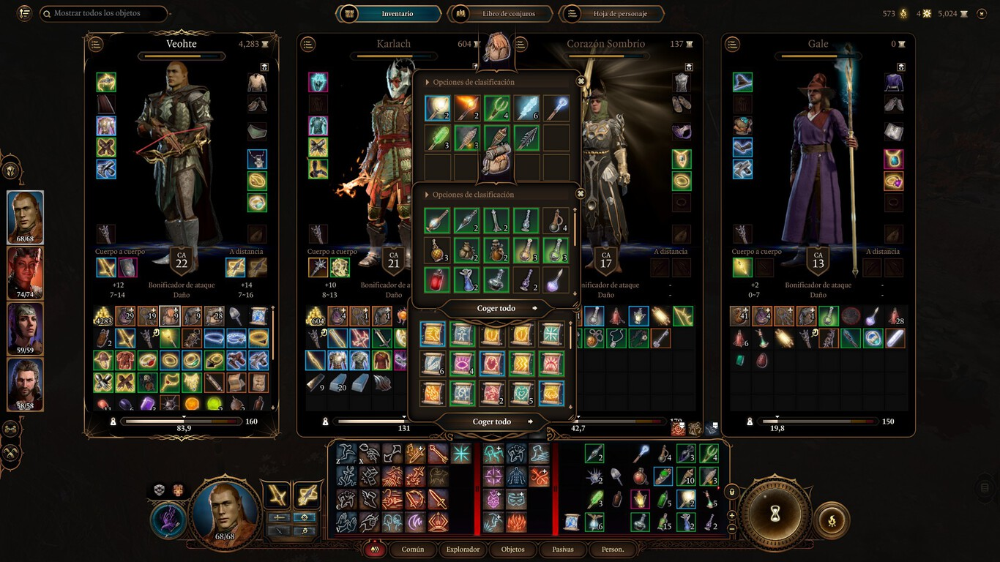

No sé si es cosa de haber llegado a la treintena hace poco, pero una de las cosas que más me relaja del mundo es fregar los platos tranquilamente mientras escucho un podcast. Creo que no tiene nada de raro, porque son varias las fuentes que hablan sobre cómo ordenar y limpiar el exterior puede tener un efecto positivo cuando tenemos cierto desorden interno en nuestra mente,
Y si hablo de desorden durante estas últimas semanas, me viene a la cabeza el inventario de mis personajes en Baldur's Gate 3 después de pasar unas horas en una mazmorra. La acumulación de cubertería de plata, armas valiosas para venta pero inútiles en las manos de mis personajes y de pociones de todo tipo, genera cierta aprensión cada vez que pulso el tabulador.
En un juego tan denso a nivel de historia y narrativa, con tantas cosas por hacer y un mapa enorme, a veces es necesario parar para que nuestra cabeza no se queme por completo y tengamos que dejar de jugar. Siempre está bien salir a dar un paseo, especialmente tras sesiones largas de Baldur's Gate 3, pero si el agobio te llega al poco de iniciar tu partida, tengo la solución perfecta.
Y es que yo me encontré en esa situación. No le di mucha importancia al tema del inventario de mis personajes hasta que llené el petate de uno de ellos y empezó a ir cargado por el mundo. Ese fue el momento en el que tocó tirar de freno de mano y buscar una solución dentro del propio Baldur's Gate 3.
Te dará paz mental ordenar así tu inventario
Mi personaje principal es un explorador cuyo objetivo es convertirse en el mejor arquero de siempre. Por ello, en mi inventario no faltan ni flechas de todo tipo, ni pociones, aceites y venenos por doquier. Esto sobre el papel es muy útil, pero la realidad es que el inventario es un lío completamente intransitable.
Como hace la mafia, Baldur's Gate 3 te da tanto el problema, como la solución. Durante tus aventuras encontrarás no pocas bolsas, las cuales pueden parecerte que carecen del sentido que tienen en otros juegos como World of Warcraft, ya que el almacenamiento en BG3 no tiene límite de casillas si no de peso total. Y eso es un error.
Mi vida en Baldur's Gate 3 cambió cuando empecé a usar esas bolsas para almacenar cada tipo de objeto similar y mantenerlos ordenados. Una bolsa para las flechas, otra para las pociones y Gale (el mago) se queda otra con todos los pergaminos que puede aprender para tenerlos localizados. Puede parecer una pérdida de tiempo, pero os aseguro que a la larga os ahorraréis mucho dolor de cabeza a la hora de buscar cierto ítem concreto.
De igual forma, os recomiendo hacer uso de funciones como el "marcar como mercancía" para vender de forma rápida toda la basura que os encontréis, el ordenado por tipo y peso en la parte superior izquierda al tabular, e incluso usar a los propios personajes como bolsas: si no tienes las suficientes, que Karlach sea quien lleve las gemas y lingotes, o Astarion la mercancía y así sacar más dinero gracias a su carisma.